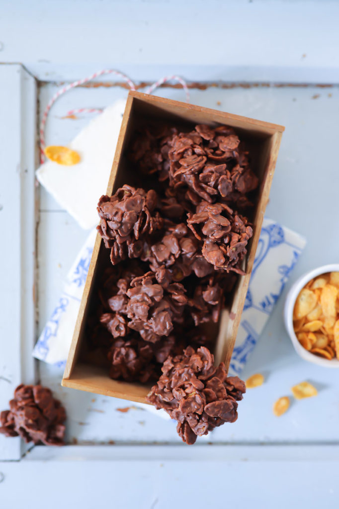

Schoko-Crossies

Jeder liebt diese Schoko-Crossies
In 10 Minuten vorbereitet - schnell, einfach, wahnsinnig lecker
Zutaten für 26 Stück
- 200 Gramm Zartbitterschokolade
- 1 Esslöffel Butter
- 50 Gramm Cornflakes
- 50 Gramm gehackte Mandeln
Zubereitung
- Zartbitterschokolade grob hacken und in einer Schüssel im Wasserbad schmelzen.
Butter unterrühren bis sie ebenfalls geschmolzen ist. Kurz abkühlen lassen.
- Cornflakes mit den Händen zerkleinern und zusammen mit den Mandeln zur Schokolade geben
- Mithilfe von zwei Teelöffeln kleine Häufchen auf ein mit Backpapier belegtes Blech
oder Brett platzieren. Anschließend 2 Stunden abkühlen lassen.